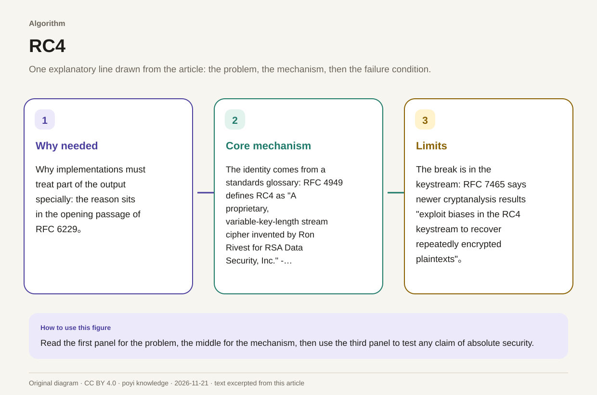
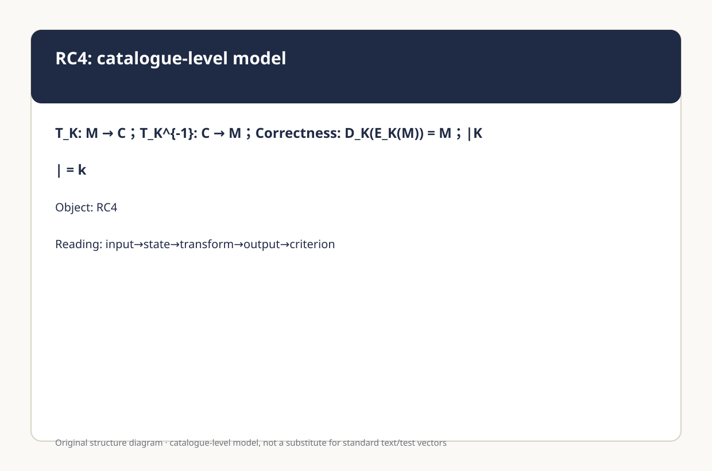

Principles
Algorithm: RC4 (RC4 流密码). The identity comes from a standards glossary: RFC 4949 defines RC4 as "A proprietary, variable-key-length stream cipher invented by Ron Rivest for RSA Data Security, Inc." - proprietary, taking keys of varying length, with Ron Rivest named as the inventor at RSA Data Security, Inc., while the same document expands the abbreviation as Rivest Cipher #4. No construction is written here: how the state table is initialised and how each step advances is in none of the three retained documents, since 6229 publishes vectors only, 7465 is about banning suites and 4949 gives a definition plus a usage note.

Why it matters
Why implementations must treat part of the output specially: the reason sits in the opening passage of RFC 6229, which lists work on cryptanalysis and then writes that "initial parts of the stream output need to be discarded" - the leading keystream had become something to throw away. The document's own ambition stops at comparable vectors for implementers: it calls them useful to implementers and records that RC4 accepts keys of different lengths, with vectors covering several lengths and offsets. So this is a usage-side constraint rather than a design rationale, and no retained text gives the design's motives, so none is guessed here.
Applications
This claim covers the TLS side only: RFC 7465 says of RC4 that "it is widely supported, and often preferred by TLS servers" - broadly installed, and frequently the server's own preference. It is not a usage inventory: the same glossary cited above records WEP as another user of RC4, and that belongs to a different citation rather than being blended in here. Of the three TLS specifications this document updates, it prints only their numbers, so no further use is attached to them.
A shared name may belong to an algorithm, standard, event, person or term; this entry is responsible only for its catalogue binding and does not absorb adjacent records. If versions, regions or institutions define the name differently, the differences stay side by side.

Limits & attacks
The break is in the keystream: RFC 7465 says newer cryptanalysis results "exploit biases in the RC4 keystream to recover repeatedly encrypted plaintexts", and it gives what that cost at the time - the figures printed there are 2^26 sessions, and 13x2^30 encryptions. The same section adds that RC4 has long been known for a variety of cryptographic weaknesses, while RFC 6229 lists earlier analyses among its references. The proportion: the retained text supplies how many sessions and encryptions a recovery needed, not how the recovery works, and this entry adds no mechanics.
History
Dating lands on what the paper that analyses the cipher prints: line 21 states that "The RC4 keystream generator was created by RSA Data Security, Inc.", its sixth reference dates Rivest's own report on the algorithm to March 1992, and the imprint line shows the paper is a chapter of the FSE 2000 proceedings volume (Lecture Notes in Computer Science 1978, Springer, 2001) - paraphrased rather than quoted, because the page-range dash lost its glyph in this extraction. That paper calls the algorithm alleged throughout, since the design was never published by its owner, and this entry keeps the wording. The era axis is therefore changed in this round's curation: the row keeps e14-standardization, whose 1977-2001 window holds the 2001 publication, and adds e16-quantum-turn, whose 1984-2019 window holds the 2011 and 2015 dates of the two TLS documents - with the mismatch stated plainly, because that second window's theme is the quantum turn and no existing window fits better.
Worked example & verification
Formal model and reproduction steps
[C=E_K(P;r),\qquad P=D_K(C)]
RC4: the registered public parameters, key material or randomness, and message are mapped through the stated transformation to an output checked against the registered criterion. The worked example is a structural reproduction, not a new test vector; parameter ranges, standard versions and implementation details remain source-bound.
References
- Wikipedia search entry for RC4 流密码. https://zh.wikipedia.org/w/index.php?search=RC4%20%E6%B5%81%E5%AF%86%E7%A0%81
- Handbook of Applied Cryptography (Menezes, van Oorschot, Vanstone). https://www.cacr.math.uwaterloo.ca/hac/